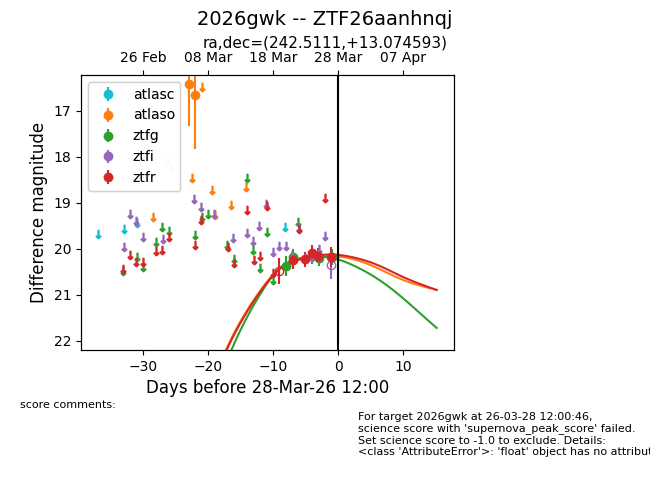
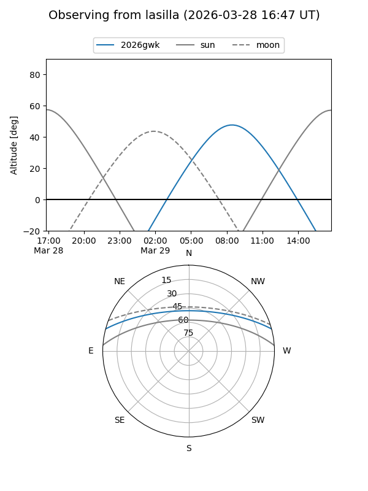
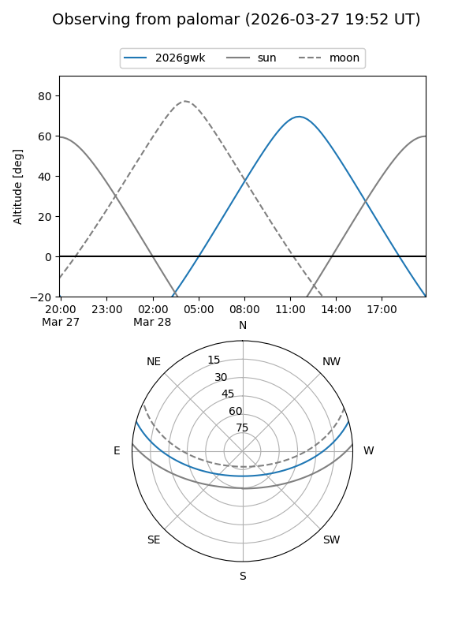
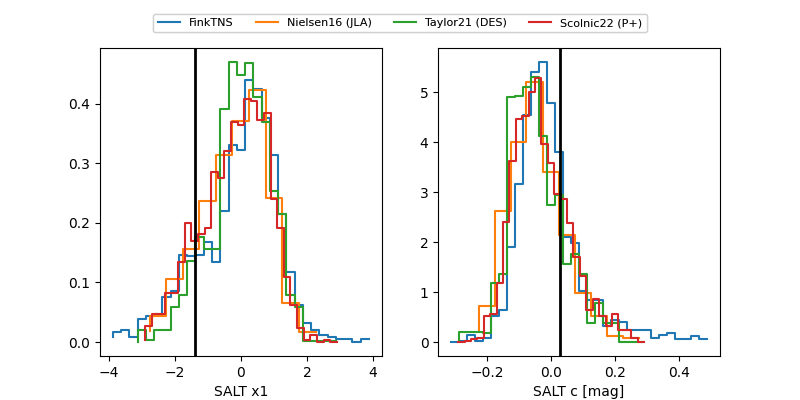

2026gwk
Target 2026gwk at 2026-03-28 12:03
Aliases and brokers:
FINK: link
Lasair: link
ALeRCE: link
TNS: link
YSE: link
alt names
ZTF26aanhnqj (ztf,fink_ztf)
2026gwk (tns,yse)
Coordinates:
equatorial (ra, dec) = 242.5111,+13.07459
equatorial (HMS+DMS) = 16:10:02.66,+13:04:28.53
galactic (l, b) = (26.3061,+41.63811)
Flags:
Photometry:
last atlaso=16.66, ztfg=20.19, ztfr=20.17
2 atlaso, 5 ztfg, 5 ztfr detections
Lightcurve

Visibility


Additional plots
